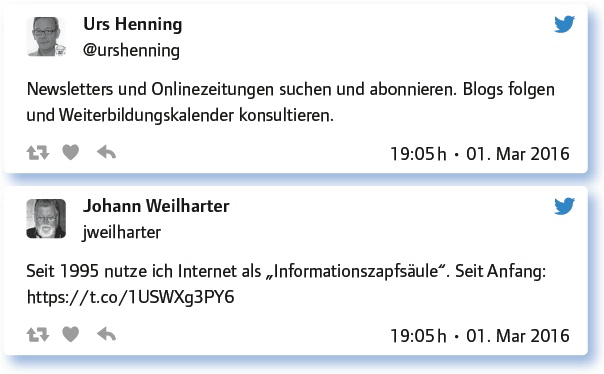
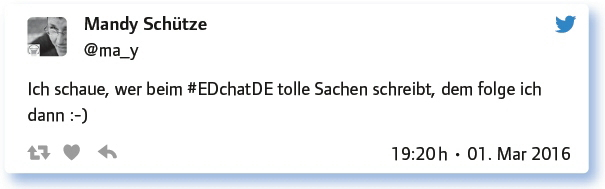
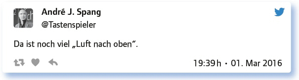
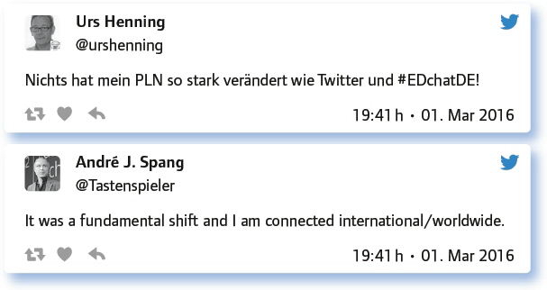
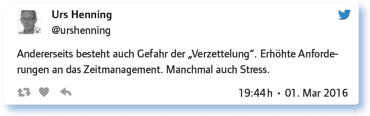

von Ines Bieler
Die voranschreitende Digitalisierung in allen Lebensbereichen erfordert neue Strategien der Informationsbeschaffung und der Arbeitsorganisation. Das Internet bietet eine unüberschaubare Flut von Nachrichten, Meldungen, Meinungen und Bewertungen an. Wie informiert man sich gezielt, findet gesuchte Informationen und arbeitet mit diesen. Es geht in diesem #EDchatDE um den digitalen Workflow: Informationen suchen, speichern, ver- und bearbeiten.
Gefragt sind also Strategien, mit denen man schnell an die „richtigen“ Informationen kommt.
Mit welchen Strategien kommst du zu deinen Informationen?
Die #EDchatDE-Teilgeber geben einen Einblick in ihre digitale Arbeitsweise und nennen eine breite Auswahl von Strategien und Tools, die zur Informationsbeschaffung genutzt werden.

Man merkt sehr schnell, wie man an gute Informationen kommt bzw. an wen man sich wenden kann. So bilden sich relativ schnell bei jedem persönliche bzw. professionelle Lernnetzwerke (PLN) heraus.
Welche Rolle spielt dein PLN bei der Informationsbeschaffung? Gerne mit Links.
Niu.ws ist ein News-Aggregator mit zusammengestellten News, z. B. Komp. fürs 21. Jh.
PLN spielt eine wichtige Rolle für Informationsbeschaffung, da diese nicht einkanalig erfolgt.
Viele meiner Ressourcen habe ich erst durch mein PLN gefunden. Beispiele? Gibt es auf meinem Blog: https://t.co/9nsTr15ket
My main PLN is #EDchatDE https://t.co/ZqHDXptYNc and Twitterhashtags like #ed-tech, #ipaded, #satchat.
I also like to do webinars with @wagjuer and eLectures at @virtuelleph – loads of interesting courses to stay up-to-date.
Lehrerblogs abonnieren. Das ZUM-Wiki führt eine umfassende Liste: https://t.co/W5xhi8ee0r
Aber die Informationsflut will auch verwaltet werden. Die dritte Frage befasst sich mit dieser Thematik:
Wie und wo organisierst, verwaltest und speicherst du deine Informationen/ Ressourcen?
Hier zeigt sich die Vielseitigkeit der digitalen Welt. Es werden zahlreiche Tools angegeben. Wichtig ist, dass man den Umgang beherrscht und den Einsatz gut plant. Viele der aufgezählten Apps oder Programme leisten nicht nur gute Dienste bei der Speicherung von großen Datenmengen, sondern es lassen sich die Daten auch leicht verwalten, suchen, kategorisieren und zur Verfügung stellen. Dieser digitale Workflow ist für die Kollaboration wichtig.
Google-Drive, One-Drive, Dropbox und https://t.co/aW61HLLHDq sowie USB-Sticks
Flippen mit Flipboard: https://t.co/sNNroIcmSk und https://t.co/0JT8uFH2Zg
I’m busy on @scoopit for professional resources: https://t.co/5Gq9JLtvbq
I use my Wiki a lot to prepare Keynotes, Workshops, Courses, Seminars, Webinars: https://t.co/wPIy23dLGX
Sammeln, speichern, sortieren von Links, Texten, Bildern, Fotos, PDF, Scans mit Evernote. Sogar Scans sind damit durchsuchbar
Links speichere ich in Diigo https://t.co/4H6MYWf2e3, ganze Webseiten und pdfs in Devon Think oder Evernote
Instapaper, Pocket, Flipboard, Diigo, Feedly, Evernote und als Screenshot (old school).
Literaturverwaltung, bestens mit @zotero; Tweets speichere ich meist mit @Pocket, um sie später wieder zu finden.
Informationen veralten schnell, man muss auf dem Laufenden bleiben und auch immer nach neuen Wegen suchen.
Welche Möglichkeiten nutzt du, um deine Info-Kanäle zu vergrößern /zu erweitern?
Erste Möglichkeit für alle #EDchatDE-Teilgeber ist natürlich:

Die nächste Frage beschäftigt viele Lehrende, denn der digitale Austausch ist nicht nur personen-, sondern auch institutionsbezogen wichtig.
Inwieweit werden an deiner (Hoch-)Schule/Institution digitale Kanäle zum Austausch und zur internen Kommunikation genutzt?
Und es wird geklagt! Bei vielen sind die Möglichkeiten, digitale Kanäle für den Austausch zu nutzen sehr spärlich. Es gibt viele Beschränkungen oder wenig wirklich gut funktionierende Systeme:
Es gibt seit kurzem einen internen Bereich für das Kollegium auf der Webseite. Sonst nur E-Mail, seufz.
Ich versuche zurzeit, mit der Fachschaft über Slack zu kommunizieren; mühsam. Einen gemeinsamen Dropbox-Ordner gibt es schon.
Es gibt Moodle und seit einem Jahr verstärkt @Logineo (E-Mail Verteiler an alle, Fachkonferenzen, AKs, Projekte und für Dateien EduSharing).
Bei uns ist selbst der Vertretungsplan noch in Papierform. So viel zu digitalem Austausch. Forget it!
Wichtigster Infokanal bei uns: Das (analoge!) Mitteilungsbuch im Lehrerzimmer …
Also Fazit:

Wie wirkt sich dann aber die digitale Vernetzung mit ihren kollaborativen Möglichkeiten beim Einzelnen aus? Wäre das nicht auch ein Vorbild für andere Lehrende oder gar für Politiker, die sich mit Bildungsfragen und der Reform des Bildungssystems befassen?
Wie hat sich dein PLN mit der Digitalisierung verändert? Hat es sich verändert?

Aber:

Welche Anregungen, Fragen hast du noch zum Thema, um am Ball zu bleiben?
Überblick zu weiteren Bildungschats: https://t.co/7nvV8irMcl
Barcamps wie z. B. das #vbmcamp16 zur Vernetzung: https://t.co/CXMkwCNbKb
Weiterbildungskalender wie: https://t.co/o6yqBk4N6e oder https://t.co/0R2DIxdQvt oder https://t.co/GE90MTkLdw
Der Horizon Report 2016 (Higher Education Edition) ist da: https://t.co/HhRQQicXtJ
Fazit:
Digitale Kanäle und Strategien, um am Ball zu bleiben – ein unerschöpfliches Thema. Die Entwicklungen gehen weiter und sicher gibt es schon wieder neue Methoden, Apps oder Programme, die man testen und nutzen kann.
Link zum vollständigen Protokoll: